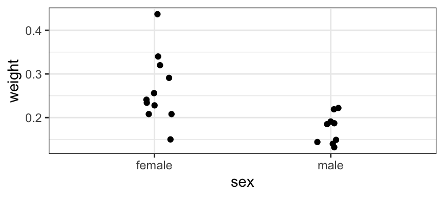

tally( ~ sex, data = KidsFeet )sex
B G
20 19 tally( ~ sex, data = KidsFeet, format = "prop" )sex
B G
0.5128205 0.4871795 tally( ~ sex, data = KidsFeet, format = "perc" )sex
B G
51.28205 48.71795 A table is one kind of numerical summary of a data set. In fact, you can think of histograms and bar graphs as graphical representations of summary tables. But sometimes it is nice to have the table itself. R provides several ways of obtaining such tables.
There are several functions for tabulating categorical variables. tally() uses a syntax that is very similar to bargraph(). We’ll call this method the formula interface. (R calls anything with a tilde (~) a formula.)
tally() allows us to choose raw counts, proportions, or percentages.
tally( ~ sex, data = KidsFeet )sex
B G
20 19 tally( ~ sex, data = KidsFeet, format = "prop" )sex
B G
0.5128205 0.4871795 tally( ~ sex, data = KidsFeet, format = "perc" )sex
B G
51.28205 48.71795 table() and its cousins use the $ operator which selects one variable out of a data frame.
KidsFeet$sex # general syntax: dataframe$variable [1] B B B B B B B G G B B B B B G G G G G G B B G G G B G B B B G G G B B G G G
[39] G
Levels: B Gtable(KidsFeet$sex)
B G
20 19 # tally() is bilingual:
tally(KidsFeet$sex)X
B G
20 19 We’ll call this interface the $-interface.
Some functions in R require the formula interface, some require the $-interface, and some allow you to use either one.1
My advice is to use formula interfaces whenever they are available and to choose tools that make this possible.
Although tally() and table() work with quantitative variables as well as categorical variables, this is only useful when there are not too many different values for the variable.
tally( ~age, data = HELPrct )age
19 20 21 22 23 24 25 26 27 28 29 30 31 32 33 34 35 36 37 38 39 40 41 42 43 44
1 2 3 8 5 8 7 13 18 15 18 18 20 28 35 18 25 23 20 18 27 10 20 10 13 7
45 46 47 48 49 50 51 52 53 54 55 56 57 58 59 60
13 5 14 5 8 2 1 1 3 1 2 1 2 2 2 1 Usually a graph is the best way to display and summarize quantitative data, but if you need to crest a summary table, you may need to group quantitative data into bins. We just have to tell R what the bins are. For example, suppose we wanted to group the 20s, 30s, 40s, etc. together.
# let's add a new variable to HELPrct
HELPrct <-
HELPrct |>
mutate(binnedAge = cut(age, breaks = c(10,20,30,40,50,60,70) ))
head(HELPrct)tally( ~ binnedAge, data = HELPrct) binnedAge
(10,20] (20,30] (30,40] (40,50] (50,60] (60,70]
3 113 224 97 16 0 That’s not quite what we wanted: 30 is in with the 20s, for example. Here’s how we fix that.
HELPrct <- HELPrct |>
mutate(binnedAge = cut(age, breaks = c(10,20,30,40,50,60,70), right = FALSE))
tally( ~ binnedAge, data = HELPrct ) binnedAge
[10,20) [20,30) [30,40) [40,50) [50,60) [60,70)
1 97 232 105 17 1 We won’t use this very often, since typically seeing this information in a histogram is more useful.
tally() can also compute cross tables for two (or more) variables.
tally(sex ~ substance, data = HELPrct) substance
sex alcohol cocaine heroin
female 36 41 30
male 141 111 94tally(~ sex + substance, data = HELPrct) substance
sex alcohol cocaine heroin
female 36 41 30
male 141 111 94Sometimes data arrive pre-tabulated. We can use gf_col() instead of gf_bar() to graph pre-tabulated data.
library(abd) # data sets from Analysis of Biological Data
TeenDeathsgf_col(deaths ~ cause, data = TeenDeaths) |>
gf_refine(coord_flip()) # flip x and y axesNotice that by default the causes are displayed in alphabetical order. R assumes that categorical data is nominal (that is, there is no particular natural or logical ordering to the categories) unless you say otherwise.
Here is an easy way to have things appear in a different order. The causes of death are reordered in order of increasing number of deaths caused.
gf_col( deaths ~ reorder(cause, deaths), data = TeenDeaths) |>
gf_refine(coord_flip()) |>
gf_labs(x = 'Cause of Death', y = 'Number of Deaths')Numerical summaries are a convenient way to describe a distribution, but remember that numerical summaries do not necessarily tell you everything there is to know about a distribution. When working with a new dataset, it is always important to explore the data as fully as possible (commonly including graphical as well as numerical summaries, and sometimes even examining the data table directly) before accepting any simplified summary as a good representation of the data. You might discover certain patterns in the data, interesting features, or even outliers or mistakes in the data, that make certain summaries misrepresentations of the whole.
In statistics \(n\) (or sometimes \(N\)) almost always means the number of observations (i.e., the number of rows in a data frame).
If \(y\) is a variable in a data set with \(n\) cases, we can denote the \(n\) values of \(y\) as
The symbol \(\displaystyle \sum\) represents summation (adding up a bunch of values).
Measures of center attempt to give us a sense of what is a typical value for the distribution.
\[ \begin{aligned} \mbox{mean of $y$} &= \overline{y} = \frac{\displaystyle \sum_{i = 1}^{n} y_i}{n} = \frac{\mbox{sum of values}}{\mbox{number of values}} \\[3mm] \mbox{median of $y$} &= \mbox{the ``middle'' number} \\ & \quad\quad \mbox{(after putting the numbers in increasing order)} \end{aligned} \]
\[ \begin{aligned} \mbox{variance of $y$} = s^2_y &= \frac{\displaystyle \sum {i = 1}^{n} (y_i - \overline{y})^2 }{n-1} \\[4mm] \mbox{standard deviaiton of $y$} = s_y &= \sqrt{s^2_y} \\ &= \mbox{square root of variance} \\[4mm] \mbox{interquartile range} = \mbox{IQR} &= Q_3 - Q_1 \\ & = \mbox{difference between first and third quartiles (defined shortly)} \end{aligned} \]
To get a numerical summary of a variable (a statistic), we need to tell R which statistic we want and the variable and data frame involved. There several ways we can do this in R Here are several ways to get the mean, for example:
mean(HELPrct$age) # this is the old fashioned way[1] 35.65342mean(~ age, data = HELPrct) # similar to our plotting methods; only works for some functions[1] 35.65342df_stats(~ age, data = HELPrct, mean) # formula-based and very flexibleUsing the formula style, we can now compute several different statistics.
mean( ~ age, data = HELPrct)[1] 35.65342sd( ~ age, data = HELPrct)[1] 7.710266var( ~ age, data = HELPrct)[1] 59.4482median( ~ age, data = HELPrct)[1] 35IQR( ~ age, data = HELPrct) [1] 10df_stats( ~ age, data = HELPrct) # this computes several statistics at onceIt is also possible to compute these statistics separately for each of several groups. The syntax is much like the the syntax we used when plotting. In fact, we have two choices for the formula: y ~ x or ~ x | z.
mean(age ~ sex, data = HELPrct) female male
36.25234 35.46821 sd(age ~ sex, data = HELPrct) female male
7.584858 7.750110 df_stats( ~ age | sex, data = HELPrct )None of these measures (especially the mean and median) is a particularly good summary of a distribution if the distribution is not unimodal. The histogram below shows the lengths of eruptions of the Old Faithful geyser at Yellowstone National Park.
library(faraway)
df_stats(~ Duration, data = oldfaith)gf_histogram( ~ Duration, data = oldfaith, bins = 20) |>
gf_labs(title = "Old Faithful Eruption Times", x = "duration (sec)") Notice that the mean and median do not represent typical eruption times very well. Nearly all eruptions are either quite a bit shorter or quite a bit longer. (This is especially true of the mean.)
Boxplots (also called box-and-whisker plots) are a graphical representation of a 5-number summary of a quantitative variable. The five numbers are the five quantiles:
gf_boxplot(~age, data = HELPrct)Boxplots provide a way of comparing multiple groups that is especially informative and visually effective. Here is one way to make boxplots of multiple groups (it should look familiar from what we know about histogram):
gf_boxplot(~age | substance ~ ., data = HELPrct)But gf_boxplot() has a better way. Put the quantitative variable on one side of the wiggle and the categorical on the other. The placement determines which goes along the vertical axis and which along the horizontal axis – just like it did for gf_point().
gf_boxplot(substance ~ age, data = HELPrct)
gf_boxplot(age ~ substance, data = HELPrct)And we can combine this idea with conditioning.
gf_boxplot(age ~ substance | homeless, data = HELPrct)
gf_boxplot(substance ~ age | homeless ~ ., data = HELPrct)When we have relatively small data sets, it may not make sense to use a boxplot. With very few observations, boxplots can be misleading, in that they suggest the presence of more observations than are really contained in the dataset. In these cases, it may be better to display all the data. gf_jitter() allows you to put a categorical variable along one axis and a quantitative variable along the other. For some data sets, either option can produce a plot that gives a good picture of the data.
gf_jitter( weight ~ sex, data = Mosquitoes, width = 0.1, height = 0)
gf_boxplot( weight ~ sex, data = Mosquitoes)
Note the effect of the width = 0.1, height = 0 – this tells gf_jitter() to move each data point slightly left or right, but not at all up or down. This can be used to reduce overplotting (data points being plotted on top of one another) without losing any information, making it clearer how many data points were observed for each possible combination of x- and y-values.
The most common summary of a categorical variable is the proportion of observations in each category. For a single category:
\[ \begin{aligned} \hat p & = \frac{\mbox{number in one category}}{n} \end{aligned} \]
Proportions can be expressed as fractions, decimals or percents. For example, if there are 10 observations in one category and \(n = 50\) observations in all, then
\[ \hat p = \frac{10}{25} = \frac{2}{5} = 0.40 = 40\% \]
If we code our categorical variable using 1 for observations in a single category of interest – “the one category” – and 0 for observations in any other category, then a proportion is a sample mean.
\[ \frac{ 1 + 1 + 1 + 1 + 1 + 1 + 1 + 1 + 1 + 1 + 0 + 0 + 0 + 0 + 0 + 0 + 0 + 0 + 0 + 0 + 0 + 0 + 0 + 0 + 0 }{25} = \frac{10}{25} \]
It is also possible to give numerical summaries of the relationship between two variables. The most common one is the correlation coefficient, which we will learn about later.
Exercise 2.1 Small variance
Create a data set with \(n = 6\) values, each an integer between 0 and 10 (inclusive) that has the smallest possible variance. Compute the mean and variance of this data set “by hand” (that is, without using mean() or sd() or var() or `df_stats(), etc. in R or similar features on a calculator). You can check your hand calculation using R, but show the hand calculation.
The variance will be smallest if all the values are equal to the mean value. In that case the variance will be 0.
If you require all of the numbers to be distinct, the best you can do is 6 consecutive numbers
tibble(x = 1:6) |> df_stats(~ x, mean, var, sd)Exercise 2.2 Large variance
Create a data set with \(n = 6\) values, each an integer between 0 and 10 (inclusive) that has the largest possible variance. Compute the variance of this data set “by hand” (that is, without using mean() or sd() or var() or df_stats(), etc. in R or similar features on a calculator). You can check your hand calculation using R, but show the hand calculation.
The variance will be largest if all the values are far from the mean. If we have a data set with three 0’s and 3 10’s, then the mean is 5 and the variance is
( 3*(0-5)^2 + 3*(10-5)^2 ) / 5[1] 30If you require the numbers to be distinct, then the best we can do istibble(x = c(0,1,2,8,9,10)) |> df_stats(~ x, mean, var, sd)Exercise 2.3 Drinks per day, graphical summary
Create side-by-side boxplots of the variable i1 (average number of drinks per day) comparing the different substance groups in the HELPrct data frame.
For each variable substance group, explain how you can tell from the boxplots whether the mean will be larger than the median or the median larger than the mean.
gf_boxplot(i1 ~ substance , data = HELPrct)The means are larger because the distributions have longer tails in the higher direction.
Exercise 2.4 Drinks per day, numerical summary
Compute the mean and median values of i1 (average number of drinks per day) for each of the substance groups in the HELPrct data frame.
mean(i1 ~ substance, data = HELPrct) alcohol cocaine heroin
29.192090 12.131579 8.879032 median(i1 ~ substance, data = HELPrct)alcohol cocaine heroin
25 6 4 One of the things that the mosaic package does is provide a formula interface for many functions that only had a $-interface before.↩︎
A note about calculating medians: If the number of data points is odd, the median is the middle value (after putting the observations in increasing order). In cases where there is an even number of observations, the median is the average of the middle two observations.↩︎